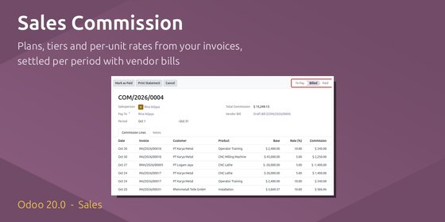
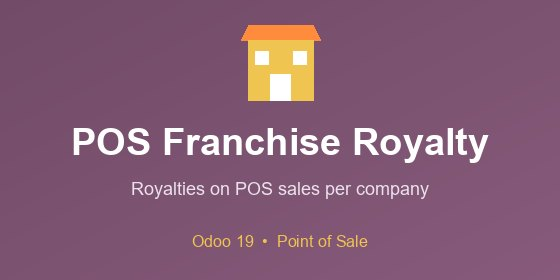
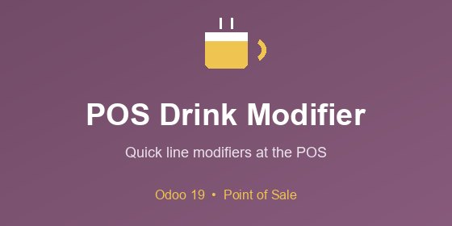
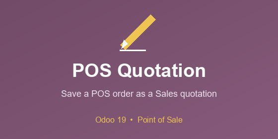
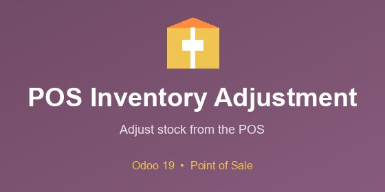
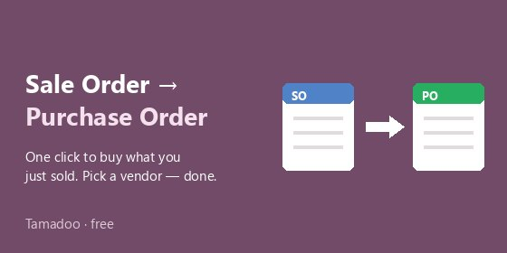
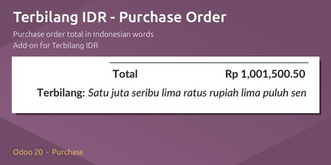
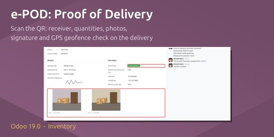
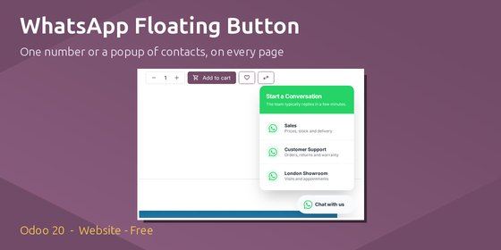
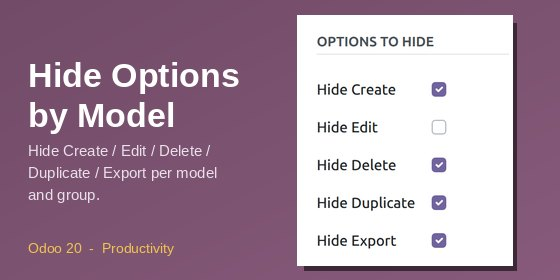

Odoo apps for POS, Sales, Inventory, Accounting, HR and Website
Tamadoo makes add-on modules for Odoo in Indonesia: 88 apps for Odoo 16, 17, 18, 19 and 20, 15 of them free. Every app is sold and downloaded on the official Odoo Apps Store.
- Odoo 16.0 – 20.0
- 15 free apps
- Indonesian localisation: PPh 21, BPJS, QRIS, Terbilang
Browse by category
- Point of Sale38 appsPOS add-ons for Odoo: payments, cashier control, reports, restaurant and retail tools.
- Sales, CRM & Purchase15 appsOdoo add-ons for quotations, commissions, targets, discounts, CRM and purchasing.
- Inventory & Manufacturing5 appsOdoo add-ons for stock cards, stock valuation, delivery proof, assets and manufacturing cost.
- Accounting & Finance6 appsOdoo add-ons for financial reports, bank statements, invoice numbering and Indonesian accounting needs.
- HR & Payroll5 appsOdoo add-ons for Indonesian payroll, leave, attendance, field tracking and recruitment tests.
- Website & eCommerce6 appsOdoo add-ons for the website shop: filters, brands, stock display and WhatsApp contact.
- Productivity & Tools13 appsOdoo add-ons for backups, approvals, printing, menus, access and team knowledge.
Featured apps
 Indonesia Payroll - PPh 21 TER, BPJS, THRIndonesian payroll on Odoo Community: PPh 21 TER with December recalculation, BPJS, overtime, THR, PKWT compensation and the 1721-A1.
Indonesia Payroll - PPh 21 TER, BPJS, THRIndonesian payroll on Odoo Community: PPh 21 TER with December recalculation, BPJS, overtime, THR, PKWT compensation and the 1721-A1. QRIS Payment for POS - Indonesia Static QRISPOS QRIS payment: show your bank-issued static QRIS code with the amount to pay on the payment screen. Any QRIS bank or e-wallet, no external API.
QRIS Payment for POS - Indonesia Static QRISPOS QRIS payment: show your bank-issued static QRIS code with the amount to pay on the payment screen. Any QRIS bank or e-wallet, no external API.
Sales Commission - Plans, Tiers, Settlements, Vendor BillsSales commission and salesperson commission from invoices: percentage, tiered or per-unit rules, refunds deducted, approval, settlements with vendor bills. Financial Reports Excel - Trial Balance, P&L, Balance SheetTrial Balance, Profit and Loss, Balance Sheet and General Ledger Excel export in one formatted XLSX workbook, for Odoo Community and Enterprise.
Financial Reports Excel - Trial Balance, P&L, Balance SheetTrial Balance, Profit and Loss, Balance Sheet and General Ledger Excel export in one formatted XLSX workbook, for Odoo Community and Enterprise. Stock Card Report - Kardex with Running BalanceStock card, kardex and stock ledger per product and location: opening balance, every move with its running balance, closing balance, on screen and in PDF.
Stock Card Report - Kardex with Running BalanceStock card, kardex and stock ledger per product and location: opening balance, every move with its running balance, closing balance, on screen and in PDF. Approval Workflow - Multi Level Approval on Any ModelDynamic approval workflow on any model without code: multi level approval with conditions, approvers per level, hidden buttons, field locking and signatures.
Approval Workflow - Multi Level Approval on Any ModelDynamic approval workflow on any model without code: multi level approval with conditions, approvers per level, hidden buttons, field locking and signatures. Attendance Geofence and Selfie - GPS Check-inAttendance geofence: GPS radius per work location, a selfie at check-in and check-out, and late arrival or early leave against the working schedule.
Attendance Geofence and Selfie - GPS Check-inAttendance geofence: GPS radius per work location, a selfie at check-in and check-out, and late arrival or early leave against the working schedule. Database Backup - Auto Backup on Schedule with RetentionAutomatic database backup on a schedule: keeps the last daily and monthly backups, e-mail on failure, storage add-ons for a local folder or Google Drive.
Database Backup - Auto Backup on Schedule with RetentionAutomatic database backup on a schedule: keeps the last daily and monthly backups, e-mail on failure, storage add-ons for a local folder or Google Drive.
All apps
 POS Auto Invoice for Company CustomersPOS auto invoice: orders of company (B2B) customers are flagged for invoicing automatically and the cashier is notified, so no business invoice is forgotten.
POS Auto Invoice for Company CustomersPOS auto invoice: orders of company (B2B) customers are flagged for invoicing automatically and the cashier is notified, so no business invoice is forgotten. POS Birthday Discount - Customer Birthday RewardPOS birthday discount applied automatically when the customer's birthday is today: birthday on the contact, discount percentage per Point of Sale.
POS Birthday Discount - Customer Birthday RewardPOS birthday discount applied automatically when the customer's birthday is today: birthday on the contact, discount percentage per Point of Sale. POS Category Discount - POS Discount Approval by PINPOS category discount: apply a percentage discount to every line of a POS category in one tap, with optional manager PIN approval per rule.
POS Category Discount - POS Discount Approval by PINPOS category discount: apply a percentage discount to every line of a POS category in one tap, with optional manager PIN approval per rule. POS Commission - Cashier Commission and POS Sales CommissionPOS commission per cashier: set a commission rate per Point of Sale, every line sold creates a commission record, and a report totals the cashier commission.
POS Commission - Cashier Commission and POS Sales CommissionPOS commission per cashier: set a commission rate per Point of Sale, every line sold creates a commission record, and a report totals the cashier commission. POS Credit Note - Create Credit Note from POS OrderPOS credit note in one click: create a draft customer credit note from a POS order with its customer and lines, ready to validate in Accounting.
POS Credit Note - Create Credit Note from POS OrderPOS credit note in one click: create a draft customer credit note from a POS order with its customer and lines, ready to validate in Accounting. POS Customer Debt Warning - POS Credit Limit AlertPOS customer debt warning: the cashier is alerted when the selected customer owes more than the credit limit, so no more credit is given unknowingly.
POS Customer Debt Warning - POS Credit Limit AlertPOS customer debt warning: the cashier is alerted when the selected customer owes more than the credit limit, so no more credit is given unknowingly. POS Daily Sales Report - End of Day PDF SummaryPOS sales report for the end of day: printable PDF per session with sales, tax, discount, average basket, payment and product breakdown.
POS Daily Sales Report - End of Day PDF SummaryPOS sales report for the end of day: printable PDF per session with sales, tax, discount, average basket, payment and product breakdown. POS Dashboard for Managers - Today's Sales per ShopPOS manager dashboard: one card per Point of Sale with today's sales and whether the register is open, a quick check across all your shops.
POS Dashboard for Managers - Today's Sales per ShopPOS manager dashboard: one card per Point of Sale with today's sales and whether the register is open, a quick check across all your shops. POS Delivery Charge - Add Delivery Fee in One TapPOS delivery charge: a Delivery button adds the delivery fee line to the order in one tap, with the fee amount set per Point of Sale.
POS Delivery Charge - Add Delivery Fee in One TapPOS delivery charge: a Delivery button adds the delivery fee line to the order in one tap, with the fee amount set per Point of Sale. POS Discount Log - Price Change Audit LogPOS audit log of discounts: every discounted line is recorded with product, price, discount, cashier and customer, to spot unusual discounting.
POS Discount Log - Price Change Audit LogPOS audit log of discounts: every discounted line is recorded with product, price, discount, cashier and customer, to spot unusual discounting. POS End of Day - POS Closing and Cash CountPOS end of day closing: guided cash count with the session summary (orders, sales, expected cash) and the difference shown at once, logged on the session.
POS End of Day - POS Closing and Cash CountPOS end of day closing: guided cash count with the session summary (orders, sales, expected cash) and the difference shown at once, logged on the session. POS Favorite Products - Quick Access BarPOS favorite products (favourite bar): pin your best sellers to a quick-access bar at the top of the POS so cashiers add them in one tap.
POS Favorite Products - Quick Access BarPOS favorite products (favourite bar): pin your best sellers to a quick-access bar at the top of the POS so cashiers add them in one tap.
POS Franchise Royalty - Royalty on Sales per CompanyPOS franchise royalty: set a royalty rate per company and get the royalty of every POS order computed, with a sales and royalty report per franchise. POS Happy Hour - Automatic Time-Based DiscountPOS happy hour discount applied automatically during the daily time window you set per Point of Sale, with a notice for the cashier.
POS Happy Hour - Automatic Time-Based DiscountPOS happy hour discount applied automatically during the daily time window you set per Point of Sale, with a notice for the cashier. POS Hide Product Info ButtonPOS hide product info: show or hide the POS product info button in the product screen per Point of Sale.
POS Hide Product Info ButtonPOS hide product info: show or hide the POS product info button in the product screen per Point of Sale. POS Invoice Download - Disable Automatic Invoice PDFStop the automatic invoice PDF download after POS payment: turn the POS invoice download on or off per Point of Sale; the invoice itself is still created.
POS Invoice Download - Disable Automatic Invoice PDFStop the automatic invoice PDF download after POS payment: turn the POS invoice download on or off per Point of Sale; the invoice itself is still created. POS Layaway - POS Deposit and Pay LaterPOS layaway: hold products for a customer against a deposit, track the remaining balance, and let them pay the rest when they collect.
POS Layaway - POS Deposit and Pay LaterPOS layaway: hold products for a customer against a deposit, track the remaining balance, and let them pay the rest when they collect. POS Member Discount - Member Price for CustomersPOS member discount: flag a customer as a member and the member discount set per Point of Sale is applied to the whole order automatically.
POS Member Discount - Member Price for CustomersPOS member discount: flag a customer as a member and the member discount set per Point of Sale is applied to the whole order automatically. POS Minimum Order Amount - Minimum ChargePOS minimum order amount: block payment of orders below the minimum charge set per Point of Sale, with a warning showing the minimum and the total.
POS Minimum Order Amount - Minimum ChargePOS minimum order amount: block payment of orders below the minimum charge set per Point of Sale, with a warning showing the minimum and the total.
POS Modifier - Quick Drink and Order ModifiersPOS modifiers for drinks and food: one tap adds Extra shot, Less ice, Oat milk and other modifiers set per Point of Sale to the line note and the receipt. POS Order Notes - Note per Order Line on ReceiptPOS note per order line: an Add Note button attaches a customer note (No onions, Gift wrap) to the selected line, shown on screen and printed on the receipt.
POS Order Notes - Note per Order Line on ReceiptPOS note per order line: an Add Note button attaches a customer note (No onions, Gift wrap) to the selected line, shown on screen and printed on the receipt. POS Price Change Restriction - Lock or Allow Open PricePOS price change control: lock the Price key on the POS numpad so cashiers cannot edit prices, or allow open price, per Point of Sale.
POS Price Change Restriction - Lock or Allow Open PricePOS price change control: lock the Price key on the POS numpad so cashiers cannot edit prices, or allow open price, per Point of Sale. POS Product Description - Product Details PopupPOS product info popup: an info button on product cards opens the full sale description (ingredients, specs, notes) without leaving the order screen.
POS Product Description - Product Details PopupPOS product info popup: an info button on product cards opens the full sale description (ingredients, specs, notes) without leaving the order screen. POS Product Stock - Show Stock Quantity on Product CardsPOS stock display: a colour-coded on-hand quantity badge on every product card, so cashiers see availability without leaving the order screen.
POS Product Stock - Show Stock Quantity on Product CardsPOS stock display: a colour-coded on-hand quantity badge on every product card, so cashiers see availability without leaving the order screen. POS QR Payment - QR Code Payment on the Payment ScreenPOS QR code with the amount due on the payment screen, built from a payload you configure such as your payment link. Customers scan and pay by phone.
POS QR Payment - QR Code Payment on the Payment ScreenPOS QR code with the amount due on the payment screen, built from a payload you configure such as your payment link. Customers scan and pay by phone. POS Queue Number - Customer Queue TicketPOS queue number for customers: a Queue button gives the next ticket number (Q001, Q002...) and staff call and mark tickets served from the backend list.
POS Queue Number - Customer Queue TicketPOS queue number for customers: a Queue button gives the next ticket number (Q001, Q002...) and staff call and mark tickets served from the backend list.
POS Quotation - Create Sale Quotation from POSPOS quotation in one tap: turn the POS cart into a draft sales quotation with the customer and lines, for customers who want a written quote first. POS Refund Reason - Reason Code for Every RefundPOS refund reason codes: the cashier picks a reason for every POS refund in one tap and every reason is logged in the backend for analysis.
POS Refund Reason - Reason Code for Every RefundPOS refund reason codes: the cashier picks a reason for every POS refund in one tap and every reason is logged in the backend for analysis. POS Sales Target - Monthly Target per ShopPOS sales target: give every Point of Sale a monthly revenue target and track this month's sales and progress, computed from POS orders.
POS Sales Target - Monthly Target per ShopPOS sales target: give every Point of Sale a monthly revenue target and track this month's sales and progress, computed from POS orders. POS Session Report - Z Report with Product BreakdownPOS Z report (session report): printable end-of-session PDF with products sold, payment breakdown by method and session total, for cash reconciliation.
POS Session Report - Z Report with Product BreakdownPOS Z report (session report): printable end-of-session PDF with products sold, payment breakdown by method and session total, for cash reconciliation. POS Shift Handover - Cashier Shift Cash CountPOS shift handover: record the cash counted when cashiers swap mid-session, with session, cashier and amount, for clear accountability per shift.
POS Shift Handover - Cashier Shift Cash CountPOS shift handover: record the cash counted when cashiers swap mid-session, with session, cashier and amount, for clear accountability per shift.
POS Stock Adjustment - Inventory Adjustment from POSPOS inventory adjustment: set the on-hand quantity of a product with a reason straight from the POS, for quick counts, damage or spoilage. POS Stock Warning - POS Low Stock and Zero Stock AlertPOS stock warning: the cashier sees an alert when adding a product that is low or out of stock, before the sale is completed.
POS Stock Warning - POS Low Stock and Zero Stock AlertPOS stock warning: the cashier sees an alert when adding a product that is low or out of stock, before the sale is completed. POS Void Approval - Manager PIN to Delete Order LinePOS manager approval to void: deleting an order line needs the manager PIN set on the Point of Sale, a wrong PIN blocks the void.
POS Void Approval - Manager PIN to Delete Order LinePOS manager approval to void: deleting an order line needs the manager PIN set on the Point of Sale, a wrong PIN blocks the void. POS Wholesale Price - Switch to Wholesale PricelistPOS wholesale mode: one button switches the whole order to your wholesale POS pricelist and back. Serve retail and wholesale customers from one POS.
POS Wholesale Price - Switch to Wholesale PricelistPOS wholesale mode: one button switches the whole order to your wholesale POS pricelist and back. Serve retail and wholesale customers from one POS. QR Menu - Digital Menu for POS and RestaurantQR menu for your restaurant or shop: a public, mobile-friendly digital menu page with the POS products and prices, opened by scanning a QR code. No app needed.
QR Menu - Digital Menu for POS and RestaurantQR menu for your restaurant or shop: a public, mobile-friendly digital menu page with the POS products and prices, opened by scanning a QR code. No app needed.- QRIS Payment for POS - Indonesia Static QRISPOS QRIS payment: show your bank-issued static QRIS code with the amount to pay on the payment screen. Any QRIS bank or e-wallet, no external API.
 Table Reservation for POS - Restaurant BookingPOS reservation and restaurant booking: record bookings with customer, date and time, party size and note, track the status and see them in a calendar.
Table Reservation for POS - Restaurant BookingPOS reservation and restaurant booking: record bookings with customer, date and time, party size and note, track the status and see them in a calendar. Discount Approval - Sales Discount Limit by LevelSales approval for discounts: discount limits per product category and level, quotations above the limit or below the minimum margin go through approval.
Discount Approval - Sales Discount Limit by LevelSales approval for discounts: discount limits per product category and level, quotations above the limit or below the minimum margin go through approval. Field Visit - Sales Visit and Customer Visit with GPSPlan each sales visit and customer visit, check in and out from the phone with GPS and photos, and see every field visit on the opportunity and customer.
Field Visit - Sales Visit and Customer Visit with GPSPlan each sales visit and customer visit, check in and out from the phone with GPS and photos, and see every field visit on the opportunity and customer. Global Discount - Sale Order Discount on TotalGlobal discount on the sale order: apply one discount to the whole quotation, as a percentage or a fixed amount, instead of editing every line.
Global Discount - Sale Order Discount on TotalGlobal discount on the sale order: apply one discount to the whole quotation, as a percentage or a fixed amount, instead of editing every line. Hide Product Code in Purchase Order LinesHide the product code (internal reference) in purchase order and RFQ lines: removes the [CODE] prefix from the product name on screen and in the PDF.
Hide Product Code in Purchase Order LinesHide the product code (internal reference) in purchase order and RFQ lines: removes the [CODE] prefix from the product name on screen and in the PDF. Lead Finder - Lead Generation from the MapLead generation from the map: type '5 km around Kemang, coffee shops' and import businesses from OpenStreetMap or Google Places as contacts or CRM leads.
Lead Finder - Lead Generation from the MapLead generation from the map: type '5 km around Kemang, coffee shops' and import businesses from OpenStreetMap or Google Places as contacts or CRM leads. Product Image in Sale Order Line and Quotation PDFSale order line image: show the product image on sale order lines in the back office and on the printed quotation and order PDF.
Product Image in Sale Order Line and Quotation PDFSale order line image: show the product image on sale order lines in the back office and on the printed quotation and order PDF.- Product Image URL - Set Product Image from a LinkProduct image from URL: paste an image link on the product, click Fetch, and Odoo downloads it and sets it as the product image.
 Product QR Code - Public Product Info PageProduct QR code for labels and packaging: customers scan it to read a mobile product page with specifications, downloads and contact buttons. No login.
Product QR Code - Public Product Info PageProduct QR code for labels and packaging: customers scan it to read a mobile product page with specifications, downloads and contact buttons. No login.
Purchase Order from Sale Order - Create PO in One ClickCreate a purchase order from a sale order (PO from SO) in one click: pick a vendor and get a draft PO with the same products and quantities.- Sales Commission - Plans, Tiers, Settlements, Vendor BillsSales commission and salesperson commission from invoices: percentage, tiered or per-unit rules, refunds deducted, approval, settlements with vendor bills.
 Sales Split - Revenue Split and Sales CreditSales split and revenue sharing: split a confirmed order between salespeople and teams, manager approval, and sales credit reports per person and team.
Sales Split - Revenue Split and Sales CreditSales split and revenue sharing: split a confirmed order between salespeople and teams, manager approval, and sales credit reports per person and team. Sales Target - Salesperson Target and Sales Team TargetSales targets per period for salespeople, sales teams and product categories, with achievement from orders or invoices, rolled up level by level.
Sales Target - Salesperson Target and Sales Team TargetSales targets per period for salespeople, sales teams and product categories, with achievement from orders or invoices, rolled up level by level.
Terbilang IDR Purchase Order - Amount in WordsTerbilang on purchase orders: print the RFQ and purchase order amount in Indonesian words under the total. Add-on for Terbilang IDR. Terbilang IDR Sales Order - Amount in WordsTerbilang on quotations and sales orders: print the amount in Indonesian words under the total. Add-on for Terbilang IDR.
Terbilang IDR Sales Order - Amount in WordsTerbilang on quotations and sales orders: print the amount in Indonesian words under the total. Add-on for Terbilang IDR. WhatsApp Quotation and Invoice - Send via WhatsAppSend WhatsApp quotation and WhatsApp invoice messages from Odoo: review the number and text, then send through the WhatsApp Business API or a wa.me link.
WhatsApp Quotation and Invoice - Send via WhatsAppSend WhatsApp quotation and WhatsApp invoice messages from Odoo: review the number and text, then send through the WhatsApp Business API or a wa.me link. Manufacturing Overhead - Factory Overhead Cost in MRPManufacturing overhead absorbed into the cost of finished goods: a % of component cost or a fixed amount per unit per BOM, posted to the overhead account.
Manufacturing Overhead - Factory Overhead Cost in MRPManufacturing overhead absorbed into the cost of finished goods: a % of component cost or a fixed amount per unit per BOM, posted to the overhead account.
Proof of Delivery - Delivery Signature, Photo, GPS by QRElectronic proof of delivery and delivery confirmation by QR code: receiver, quantities, photos, signature and GPS geofence check on the delivery order. RFID Asset Tracking - Tags, Audits and Reader APIRFID asset tracking on maintenance equipment: tag assets, track location and holder, audit rooms with a handheld reader, connect readers over a REST API.
RFID Asset Tracking - Tags, Audits and Reader APIRFID asset tracking on maintenance equipment: tag assets, track location and holder, audit rooms with a handheld reader, connect readers over a REST API.- Stock Card Report - Kardex with Running BalanceStock card, kardex and stock ledger per product and location: opening balance, every move with its running balance, closing balance, on screen and in PDF.
 Stock Journal Entry - Real-time Perpetual InventoryReal-time stock accounting: perpetual inventory journal entries at every receipt, delivery, return and transfer, with per-category and per-warehouse accounts.
Stock Journal Entry - Real-time Perpetual InventoryReal-time stock accounting: perpetual inventory journal entries at every receipt, delivery, return and transfer, with per-category and per-warehouse accounts. Bank Statement Import Indonesia - BCA, Mandiri, BRI, BNIBank statement import for Indonesian banks (BCA, Mandiri, BRI, BNI, CIMB Niaga): layout detected, Indonesian numbers and dates read, duplicates skipped.
Bank Statement Import Indonesia - BCA, Mandiri, BRI, BNIBank statement import for Indonesian banks (BCA, Mandiri, BRI, BNI, CIMB Niaga): layout detected, Indonesian numbers and dates read, duplicates skipped. Cash Advance and Petty Cash - Employee Advance SettlementEmployee cash advance with approval, payment and settlement (return or reimburse the difference), plus petty cash vouchers, with journal entries posted.
Cash Advance and Petty Cash - Employee Advance SettlementEmployee cash advance with approval, payment and settlement (return or reimburse the difference), plus petty cash vouchers, with journal entries posted.- Financial Reports Excel - Trial Balance, P&L, Balance SheetTrial Balance, Profit and Loss, Balance Sheet and General Ledger Excel export in one formatted XLSX workbook, for Odoo Community and Enterprise.
 Invoice Numbering with Roman Month - 001/INV/XI/2026Invoice numbering and invoice sequence with a Roman numeral month, like 001/INV/XI/2026, for invoices, bills, credit notes and entries, restarting monthly.
Invoice Numbering with Roman Month - 001/INV/XI/2026Invoice numbering and invoice sequence with a Roman numeral month, like 001/INV/XI/2026, for invoices, bills, credit notes and entries, restarting monthly. Print Journal Entries - Journal Entry Report PDFPrint journal entries as a PDF report: select one or more entries and print a clean journal voucher with debit and credit lines and balanced totals.
Print Journal Entries - Journal Entry Report PDFPrint journal entries as a PDF report: select one or more entries and print a clean journal voucher with debit and credit lines and balanced totals. Terbilang IDR - Amount in Words in Indonesian on InvoiceTerbilang: the invoice amount in words in Indonesian under the total, "Satu juta dua ratus ribu rupiah", with correct rupiah and sen rules.
Terbilang IDR - Amount in Words in Indonesian on InvoiceTerbilang: the invoice amount in words in Indonesian under the total, "Satu juta dua ratus ribu rupiah", with correct rupiah and sen rules.- Attendance Geofence and Selfie - GPS Check-inAttendance geofence: GPS radius per work location, a selfie at check-in and check-out, and late arrival or early leave against the working schedule.
 GPS Tracking - Live Tracking of Your Field Team on a MapEmployee location tracking on a live map: chosen users share their GPS position from the browser or mobile app, with day trails, distance and hours.
GPS Tracking - Live Tracking of Your Field Team on a MapEmployee location tracking on a live map: chosen users share their GPS position from the browser or mobile app, with day trails, distance and hours. Indonesia Leave - Cuti, Leave Accrual, Public HolidayIndonesian leave (UU 13/2003, Cipta Kerja): statutory leave types, 12-day annual leave accrual, SKB public holidays and cuti bersama charged to annual leave.
Indonesia Leave - Cuti, Leave Accrual, Public HolidayIndonesian leave (UU 13/2003, Cipta Kerja): statutory leave types, 12-day annual leave accrual, SKB public holidays and cuti bersama charged to annual leave.- Indonesia Payroll - PPh 21 TER, BPJS, THRIndonesian payroll on Odoo Community: PPh 21 TER with December recalculation, BPJS, overtime, THR, PKWT compensation and the 1721-A1.
 Psychometric Test - Aptitude and Personality TestPsychometric test for recruitment: invite applicants to timed aptitude and personality tests (DISC, Big Five) and get scored results in Odoo.
Psychometric Test - Aptitude and Personality TestPsychometric test for recruitment: invite applicants to timed aptitude and personality tests (DISC, Big Five) and get scored results in Odoo. Brand Filter for Website Shop - Product BrandWebsite brand filter for the eCommerce shop: define product brands, assign them to products and let customers filter the shop by brand.
Brand Filter for Website Shop - Product BrandWebsite brand filter for the eCommerce shop: define product brands, assign them to products and let customers filter the shop by brand. Brand Filter Multi-Select - Shop Filter by Several BrandsMulti-select brand filter for the eCommerce shop sidebar: shoppers tick several brands at once. Uses the brands of the Brand Filter module.
Brand Filter Multi-Select - Shop Filter by Several BrandsMulti-select brand filter for the eCommerce shop sidebar: shoppers tick several brands at once. Uses the brands of the Brand Filter module. Hide Out of Stock Products on Website ShopHide out of stock products from the eCommerce shop and search with one switch per website, without unpublishing them.
Hide Out of Stock Products on Website ShopHide out of stock products from the eCommerce shop and search with one switch per website, without unpublishing them. Shop Filter - Multi-Select Category Filter for eCommerceShop filter with multi-select checkboxes in the eCommerce sidebar: shoppers tick several categories at once. Extensible for brand and other filters.
Shop Filter - Multi-Select Category Filter for eCommerceShop filter with multi-select checkboxes in the eCommerce sidebar: shoppers tick several categories at once. Extensible for brand and other filters. Shop Vendor Filter - Website Vendor on Product TilesShop vendor filter for eCommerce: show the vendor on product tiles and let shoppers filter the shop by vendor. For marketplaces and distributors.
Shop Vendor Filter - Website Vendor on Product TilesShop vendor filter for eCommerce: show the vendor on product tiles and let shoppers filter the shop by vendor. For marketplaces and distributors.
WhatsApp Button - Floating Chat Widget for WebsiteWhatsApp floating chat button on every website page: one number or a popup with several contacts, with an optional message already typed in.- Approval Workflow - Multi Level Approval on Any ModelDynamic approval workflow on any model without code: multi level approval with conditions, approvers per level, hidden buttons, field locking and signatures.
- Database Backup - Auto Backup on Schedule with RetentionAutomatic database backup on a schedule: keeps the last daily and monthly backups, e-mail on failure, storage add-ons for a local folder or Google Drive.
 Direct Print - Silent Print with QZ TrayDirect print of any report (PDF, ZPL, ESC/POS) to a local printer without the download or print dialog: printer per report, user and workstation, via QZ Tray.
Direct Print - Silent Print with QZ TrayDirect print of any report (PDF, ZPL, ESC/POS) to a local printer without the download or print dialog: printer per report, user and workstation, via QZ Tray. Document AI - Chat with Documents and Cited SourcesAI chat with documents: ask your PDF, DOCX and TXT files and get answers grounded in them, with the source passages cited (RAG with Google Gemini).
Document AI - Chat with Documents and Cited SourcesAI chat with documents: ask your PDF, DOCX and TXT files and get answers grounded in them, with the source passages cited (RAG with Google Gemini). Google Drive Backup - Database Backup to Your DriveGoogle Drive backup: send your scheduled auto backup of the database to your own Drive with one-click OAuth, no service-account keys. Add-on for Database Backup.
Google Drive Backup - Database Backup to Your DriveGoogle Drive backup: send your scheduled auto backup of the database to your own Drive with one-click OAuth, no service-account keys. Add-on for Database Backup.
Hide Export Button - Hide Create, Delete, Duplicate per ModelHide export, hide delete, hide duplicate, hide create button and edit per model, for a user group or for everyone. Restrict actions without code. Hide Menu User-wise - Hide Any Menu per UserHide menu items per user and control menu access: choose the apps and sub-menus each user should not see in a Hidden Menus tab on the user form.
Hide Menu User-wise - Hide Any Menu per UserHide menu items per user and control menu access: choose the apps and sub-menus each user should not see in a Hidden Menus tab on the user form. Knowledge Base - Company Wiki with RevisionsKnowledge base and company wiki in Odoo: pages with revision history, readable diff and restore, read in a clean docs site by employees, portal users or anyone.
Knowledge Base - Company Wiki with RevisionsKnowledge base and company wiki in Odoo: pages with revision history, readable diff and restore, read in a clean docs site by employees, portal users or anyone. Local Backup - Database Backup to a Server FolderDatabase backup to a local server folder: scheduled automatic backups written to a folder you choose, kept tidy by the retention policy. Add-on for Database Backup.
Local Backup - Database Backup to a Server FolderDatabase backup to a local server folder: scheduled automatic backups written to a folder you choose, kept tidy by the retention policy. Add-on for Database Backup. PDF Preview - Open PDF Reports in a Browser TabPDF preview and report preview in the browser: invoices, orders and every other PDF report open in a new tab instead of downloading.
PDF Preview - Open PDF Reports in a Browser TabPDF preview and report preview in the browser: invoices, orders and every other PDF report open in a new tab instead of downloading. Roman Numeral Sequence - 001/SO/IX/2026 NumberingRoman numeral month in sequence numbers, like 001/SO/IX/2026: for sales orders, purchase orders, transfers and every document numbered by a sequence.
Roman Numeral Sequence - 001/SO/IX/2026 NumberingRoman numeral month in sequence numbers, like 001/SO/IX/2026: for sales orders, purchase orders, transfers and every document numbered by a sequence. Telegram Integration - Telegram Bot and NotificationsTelegram bot for Odoo: browse and create sales orders, invoices, purchases and contacts from Telegram chat, with real-time Telegram notification of events.
Telegram Integration - Telegram Bot and NotificationsTelegram bot for Odoo: browse and create sales orders, invoices, purchases and contacts from Telegram chat, with real-time Telegram notification of events. WhatsApp AI Chatbot - Answers from Your DocumentsWhatsApp chatbot with AI that answers customer messages from your own documents, with sources. Connects Document AI to the WhatsApp Cloud API.
WhatsApp AI Chatbot - Answers from Your DocumentsWhatsApp chatbot with AI that answers customer messages from your own documents, with sources. Connects Document AI to the WhatsApp Cloud API.
Contact
Questions about an app, a version you need, or a custom change: tama.odoo@gmail.com.
Buying and downloading happens on apps.odoo.com; each app page here links to its store listing for every Odoo version.